5MMCS001W Lecture 11 - Cameras and Lerp
Lecture Overview
5MMCS001W Lecture 11
Unity Camera Prefabs
Unity Camera Prefabs - Prefab:
Prefab is a collection of assets and custom scripts that acts as a complete Game Object.It is also useful for using and editing multiple objects.
Just right click to create a Prefab Variant, or drag into Hierarchy, then back for an Original Prefab. You can open and edit Prefabs in the top of the Inspector Window. Note: it is not necessary to create new prefabs for this CW, though it could be an extra.
Camera Prefabs Folder
In the Camera Prefabs folder are a few Camera Rigs, explained below.
To use them, simply drop one into your scene, and set the target field on the root of the camera rig.
If your player is tagged "Player", you don't even have to assign the target, as by default the cameras will automatically target the first object they find tagged "Player". You can uncheck this option if you don't want it.
After adding one to your scene, you will also probably want to delete the default "Main Camera" that was in your scene already, since the camera rigs contain their own cameras. Note: some of these scenes are just scripts attached to the main camera….
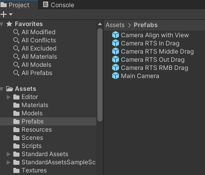
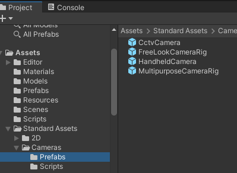
Camera and Character Controller Prefabs
Unity Camera Controllers – 3PC, FPC, Other Camera Prefabs
Video: Unity 3D Tutorial Third Person Shooter part 2 The Aiming [Outdated]
Unity Project Scenes - Standard Assets: 3PC, FPC, Others
This will be used more for the mouse orbit and waypoint navigation model, if at all.
Comes with Freelook, MouseLook and Mouse Orbit Improved (MOI) scripts.
I include these in Camera Demos SA Project so you do not have to do the complex import.
The FPC and 3PC is advanced and more suited for games (uses Cinemachine as well).
It also comes in a complex range of URP and Non-URP, Standard Assets (old), and Starter Assets (new)
Unity Character Controller Prefabs (with Cameras)
Unity Project Scenes – Starter/Standard Assets: 3PC, FPC
Starter Is new and comes only in URP
https://assetstore.unity.com/search#q=starter%20asset
Standard is old and did come in URP and Non URP
https://jimmyvegas.itch.io/first-person-controller-starter-asset
Unity Camera (Character) Controllers
Unity Project Scenes – Starter/Standard Assets: 3PC, FPC
The character in a first- or third-person game will often need some collision-based physics so that it doesn’t fall through the floor or walk through walls. Usually, though, the character’s acceleration and movement will not be physically realistic, so it may be able to accelerate, brake and change direction almost instantly without being affected by momentum.
In 3D physics, this type of behaviour can be created using a Character Controller. This component gives the character a simple, capsule-shaped collider that is always upright. The controller has its own special functions to set the object’s speed and direction but unlike true colliders, a rigidbody is not needed and the momentum effects are not realistic.
A character controller cannot walk through static colliders in a scene, and so will follow floors and be obstructed by walls. It can push rigidbody objects aside while moving but will not be accelerated by incoming collisions. This means that you can use the standard 3D colliders to create a scene around which the controller will walk but you are not limited by realistic physical behaviour on the character itself.
Unity Camera (Character) Controllers
Unity Project Scenes - Standard Assets: 3PC, FPC
- 3PC – Third Person Character Controller
- FPC – First Person Controller
Unity Camera Prefabs - Unity Starter Assets
Prefabs are already used in the demo Unity project, but Starter Asset Package is not there
If you want to use it:
Import Unity Starter Assets packages:
- https://assetstore.unity.com/packages/essentials/starter-assets-thirdperson-updates-in-new-charactercontroller-pa-196526
- https://assetstore.unity.com/packages/essentials/starterassets-firstperson-updates-in-new-charactercontroller-pac-196525
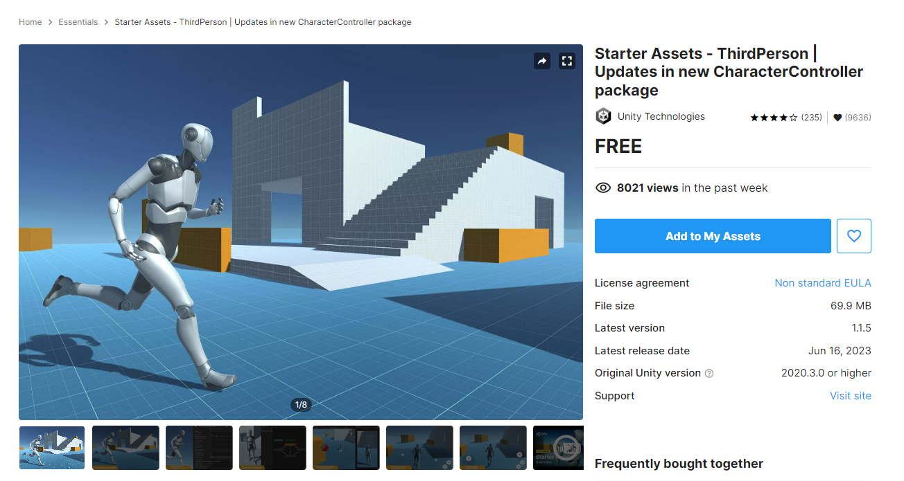
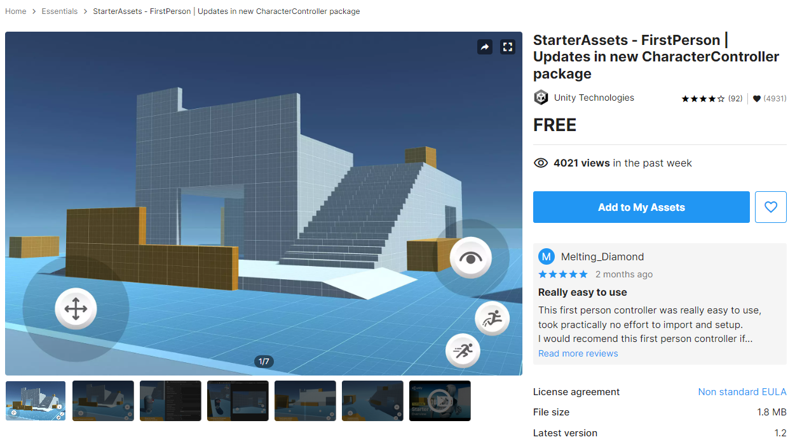
Unity Camera Controllers – 3PC, FPC
Unity Project Scenes - Standard Assets non URP: 3PC, FPC
Video: Third Person Character Controller Setup in Unity
- 1. Create new scene
- 2. Import Unity Standard Assets package/Characters from https://jimmyvegas.itch.io/standard-assets
- Assets/Import Package/Custom Package/select downloaded “Standard Assets for Unity 20184.unitypackage”
- You may need to change “UI.Text” to “UnityEngine.UI.Text” in 1 or 2 scripts with an error message
- 3. Import all
- 4. In Project window go to:
- Standard Assets/Characters/Third Person Character/Prefabs/ThirdPersonController or FirstPersonController
- 5. Drag into hierarchy
- 6. Create and zero out plane - Run and use mouselook and arrows to navigate
- Create GameObject/3D Object/Plane
- 3PC or FPC character: Drag down below prefab - 0,0,0
- 7. When Creating your own 3PC or FPC:
- Position Main Camera to frame target/player
- Drag Main Camera into 3PC or FPC as Child
Unity Project Scenes - Starter Assets URP: 3PC, FPC
- 1. Create new scene
- 2. Import Unity Standard Assets package/Characters from https://assetstore.unity.com/packages/package/267961
- 3. Import all
- 4. In Scene drag in Prefabs from Package:
- FPC: NestedParent_Unpack Prefab in scene
- 3PC: Tool menu at top: reset player armature, controller capsule
- 5. URP is Basic, will need to set up post processing volume (tutorial sheet next week)
Unity Camera Controllers - 3PC
Unity Project Scenes – Starter Assets: 3PC, FPC
- Has:
- Navmesh AI (uneeded)
- Rigidbody
- Capsule Collider
- 3 Person Control
- Character with animator
- Must Add Camera:
- Adjust view
- Parent camera to 3PC
- Add colliders around desired scene to limit the navigation:
- (Setting up Play Area)
- https://unity3d.com/learn/tutorials/projects/roll-ball-tutorial/setting-play-area?playlist=17141
Camera Controllers - Other Scripts and SmoothFollow
Unity Camera Controllers – Other Scripts
Unity Project Scenes:
- SmoothFollow
- Freelook
- Waypoint with Mouse Orbit
- RTS - Real Time Strategy Camera Controllers
- Diorama (follows player in 2.5D)
- Camera Switcher
Exercise: Unity SmoothFollow and SmoothDamp Camera
(Good for following Player Character from behind)
https://docs.unity3d.com/ScriptReference/Vector3.SmoothDamp.html
New 3D Scene, Add Cube and Plane, Add camera code to camera, use cube as target
Unity Camera Prefabs - FreeLook
Unity Camera Prefabs – FreeLook (Similar to Whitevoid)
http://www.whitevoid.com/#/main
Unity Project Scenes - Starter Assets: 3PC, FPC, FreeLook
- In Project window go to:
- Standard Assets/Cameras/Prefabs/FreeLookCameraRig
- Drag into hierarchy
- Create GameObject/3D Object/Cube/
- Tag as Player
- Delete Main Camera
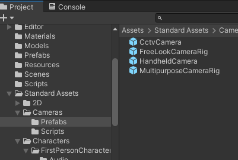
Unity Camera Prefabs – FreeLook (Like Web mouse rotation)
Unity Project Scenes – Starter/Standard Assets: 3PC, FPC, FreeLook
The "Free Look" camera is designed to follow a target's position, while allowing the user to rotate the angle of the camera with the mouse (or a touch gesture). With the "Free Look" camera, the rig is designed so the root object of the rig should always look towards the target's position. The camera offset is specified by the height (the Y value) of the "Pivot" object, and the forward offset of the final "Camera" object. The camera lerps to the view position.
A typical set up for this would be to have the Y positional value of the Pivot set to 2 (for 2 meters above the target), and the Z positional value of the Camera set to -6 (for 6 meters behind the pivot).
If you wanted to adjust the camera to be to one side of the target (eg, for a closer over-shoulder third person view), you should adjust the X position value of the Pivot object.
- Camera Rig<- position will move towards target.
- Pivot<- adjust Y position for height, X position for horizontal offset
- Camera<- adjust Z position for distance away from target
- Pivot<- adjust Y position for height, X position for horizontal offset
Unity Camera Controllers - Waypoint and MouseOrbit
Unity Project Scenes: Waypoint with Mouse Orbit
Unity Project Scenes:
Waypoint with Mouse Orbit
- Object Selection – Waypoints
- Mouse Orbit – Around Waypoints with Focus
- Focus – Camera Focus on GameObject
Camera Waypoint Examples
Unity Camera Controllers
Unity Project Scenes: Waypoint with Mouse Orbit
Video: 3D Menu + Camera Waypoints
http://forum.unity3d.com/threads/camera-frame-selected-how-to.7308/
Transform look at
https://docs.unity3d.com/2020.1/Documentation/ScriptReference/Transform.LookAt.html
http://answers.unity3d.com/questions/891120/framing-an-object-bounds-encapsulating.html
Selection.activeGameObject = yourObject; SceneView.FrameLastActiveSceneView();
Maybe Camera.WorldToViewportPoint andCamera.ViewportToScreenPoint will come in handy.
Simple scripts
Camera documentation links
Unity Camera Controllers – Some basic Scripts to try
Camera Waypoint Script - On your main camera
Unity Project Scenes: Waypoint with Mouse Orbit
Camera Waypoint Script
Pasted from <http://answers.unity3d.com/questions/891120/framing-an-object-bounds-encapsulating.html>
On your main camera:
Camera Waypoint Script - On your GameObject
On your GameObject:
Mouse Camera Orbit Improved (MOI) Examples:
Unity Project Scenes: Waypoint with Mouse Orbit
Camera rotates around object selected and mouse orbited
http://stackoverflow.com/questions/34117591/c-sharp-with-unity-3d-how-do-i-make-a-camera-move-around-an-object-when-user-mo
Mouse Orbit
http://wiki.unity3d.com/index.php?title=MouseOrbitImproved#Code_C.23
Mouse Orbit Zoom
http://wiki.unity3d.com/index.php/MouseOrbitZoom
Cursor Lock
Press key to turn mouse orbit on and off - modify
Unity Camera Controllers - RTS Camera Movement
Unity Camera Controllers – RTS Camera Movement
Unity Project Scenes: Real Time Strategy Cameras
Mouse input movement similar to real time strategy games.
The input translates the mouse 2D screen position into 2.5D or 3D camera movement.
See Unity Project (Camera Demos SA) Scene and Code
Mouse RTS Position – Basic with RMB (RightMouseButton)
Unity Camera Controllers – RTS Position
Unity Project Scenes: Real Time Strategy Cameras
http://coffeebreakcodes.com/camera-movement-with-mouse-unity3d-c/
Mouse screen position translates camera when RMB pressed
Inside screen
Very basic
- Uses principles we looked at above and in previous lectures and tutorials
- Input.GetMouse Button
- Input.GetAxis
- Transform
- Vector3
- Time.DeltaTime
Mouse RTS Position – Mouse 2D Out Screen Drag
Unity Camera Controllers– RTS Position
Unity Project Scenes: Real Time Strategy Cameras
http://coffeebreakcodes.com/camera-movement-with-mouse-unity3d-c/
Mouse screen position translates camera – Script on Camera
Outside screen
Inside screen (1/2 code)
Mouse RTS Position – Mouse 2D In Screen Drag
Unity Camera Controllers– RTS Position Live Input
Unity Project Scenes: Real Time Strategy Cameras
http://coffeebreakcodes.com/camera-movement-with-mouse-unity3d-c/
Mouse screen position translates camera – Script on Camera
Outside screen
Inside screen (½ code)
Unity Camera Controllers – RTS Rotation Live Input
Mouse RTS Rotation
Mouse screen position rotates camera
This does not have focus for target, we will use other code instead.
Mouse Orbit and waypoint
Unity Camera Controllers - 2.5D Diorama Style
Unity 2.5D Camera – Diorama
Unity Project Scenes - Noor5 and Rollerball
Unity Project Scenes: Diorama - Noor5 and Rollerball
Example: https://www.youtube.com/watch?v=CvEMvYUXxaE
Video: Testing a dynamic 2.5D camera on Unity 3D engine
https://learn.unity.com/project/roll-a-ball
Noorcon Inc. - Unity 3D Game Programming Part 5 - Vahe Karamian
- Camera with transparent player controlled by input keys
- (Parented, constrained by script, or constrained by Unity “Align with View”)
- Collider boxes for lockdown
- Similar to Rollerball tutorial
Unity 2.5D Camera – Diorama Tutorial with Player object and Aligned Camera
Create Gameobject (Player):
- Add Rigidbody (Physics, Gravity)
- Freeze rotation on X and Z
Diorama Tutorial - playerInput Script
Add Script to Player GameObject:
Diorama Tutorial - Scene Setup and Align With View
In Scene Window:
- Create GameObject/3D Object/Plane
- Drag down below prefab in Scene – this is so the Player Controller does not drop through the scene.
- Position Main Camera to frame object and scene
- Make sure your boundaries (Planes? Lego?) have colliders on
In Scene Window:
In the scene window, use your mouse to position your view in the behind the Player. When you are satisfied with what you see in the Scene Window, select the Main CameraObject. From the main menu, select GameObject-> Align With View. This will move the Main Camera GameObject, or the current selected GameObject, to be aligned with the view in the scene
Run with Play key at top and use key input to move about and see result
Diorama Tutorial - Static Colliders and Camera Alignment
Add Static Colliders:
- Make sure walls or lego cubes constraining diorama have colliders to stop object
Make Player Controller Transparent or Small
In the scene, use your mouse to position your view behind the CP, the Sphere. When you are satisfied with what you see in the Scene Window, select the MainCamera object. From the main menu, select GameObject->Alighn With View. This will move the Main Camera GameObject, or the current selected GameObject, to be aligned with the view in the scene!
Adjust as needed, Run with Play key at top and use key input to move about and see result
Camera Switcher and Camera Exercises
Unity 2.5D Camera – Camera Switcher
Unity Project Scenes: Camera Switcher
Works with all previous cameras!
Try this and experiment – move objects with cameras attached and switch to them, use triggered animations and lerps….
Exercise: Unity 3D Camera - Waypoints and Mouse Orbits
Exercise: Unity 3D Camera- Waypoints and mouse orbits Example: 100,000 Stars http://stars.chromeexperiments.com/
In Camera Demos Unity Project
- Has mouse orbit with no limits
- Can have Boolean for game object framed
- Right Mouse Button goes Back to Start Object
- Esc key deactivates Mouse orbit deactivate
- (for easier mouse cursor selection)
Exercise: Unity 2.5D Camera – FreeLook Camera
(Limited mouse orbit – Whitevoid – Outside In)
- Freelook in Camera Demos Unity Project – Add camera moves
- Mouse orbit by 2D screen mapping
- (adjust limits)
- 2. Add Camera Focus to GameObject
- (try swapping targets)
- 3. Or use Lerp, Movetowards, Translate, or Animations triggered
- (move camera, script settings, or new focus as above)
Exercise: Animation Trigger Waypoints
- Position Changes (Animated)
- Camera Animations for movement
- Rotation (Inside Out)
- Camera MouseLook Script or RTS Middledrag (rotation)
Exercise: Movement Scripted Free Waypoints
- Position Changes (Scripted)
- Code from Lego Bricks Tutorial 03
- Try some more advanced code – Vector3, movetowards, Lerp
- Rotation (Inside Out)
- Camera MouseLook Script or RTS Middledrag (rotation)
LERP Reference
LERP and Coroutine References
https://gamedevbeginner.com/the-right-way-to-lerp-in-unity-with-examples/
Video: The right way to Lerp in Unity
https://gamedevbeginner.com/coroutines-in-unity-when-and-how-to-use-them/
Video: Coroutines in Unity (how & when to use them)
Good: Linear Move "from – to" in period of time
- 1. Defined start end and duration
- 2. Elapsed time divided by duration
- 3. Checks for elapsed=duration to snap to end
- 4. Usually put in a coroutine
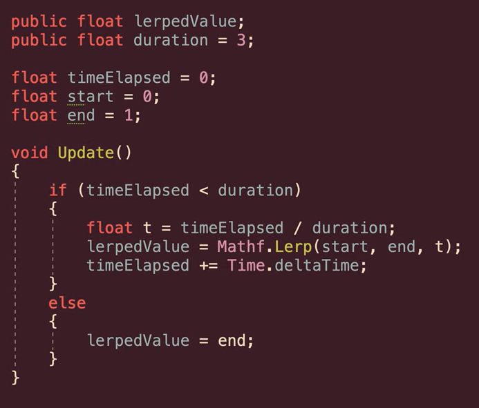
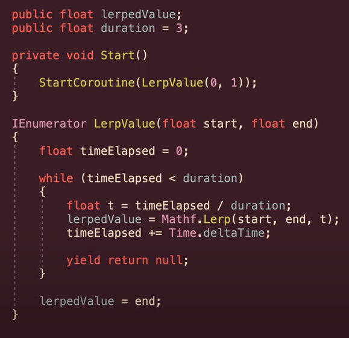
"Bad": Dynamic easing method
"Bad": Dynamic easing method - constantly moved to changing target
- 1. Use current target as minimum lerp value
- 2. Maximum lerp is moving target (passed in)
- 3. T = Time.deltaTime
- 4. Constantly update as fractionally closer to target.
- 5. Change gets smaller - incorrect ease - can snap though
- 6. Also rate of change is not scaled
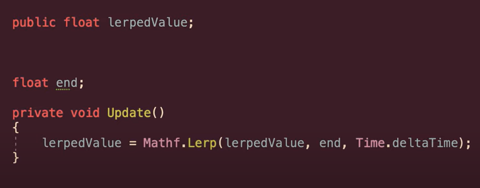
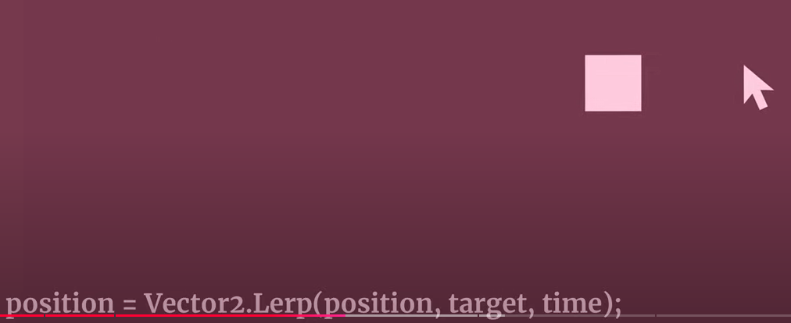
SmoothDamp is preferred
Smoothly move towards a dynamic target over approx amount of time.
- Beginning and end will be slowed
- Clamped?
- Good for follow camera
- Current velocity
- How fast changing
- Remaining distance to target
- In CameraSmoothFloow Example in "Camera Demos SA" Project
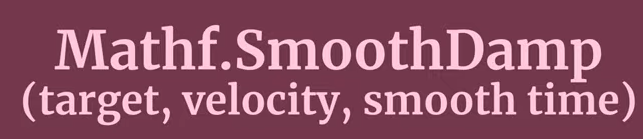
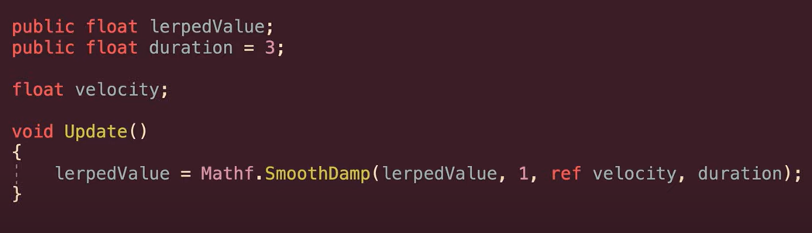
Lerp with fixed time scale and curve
(ease in and out)
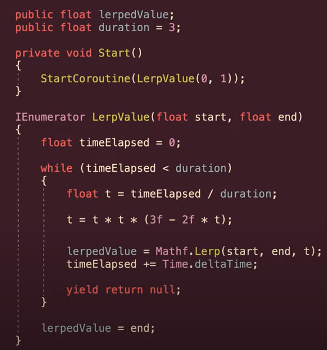
Or pass in normalised animation curve
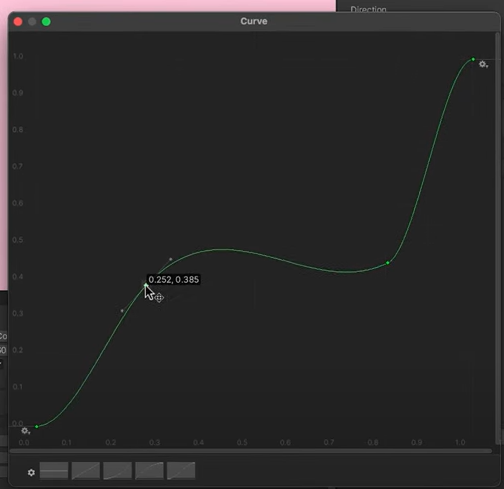
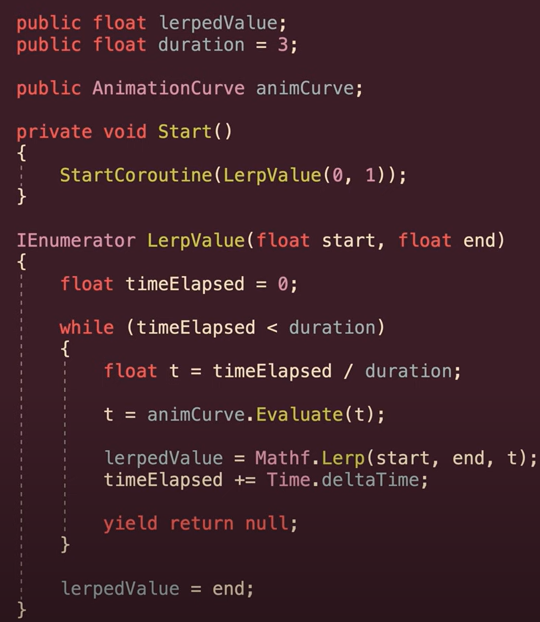
ClickLerp: New Camera Position by Keypress and Mouse
ClickLerp: New camera position by keypress, Mouse click
The parameters that Vector3.Lerp as also the Vector3.MoveTowards require are the following:
- 1 parameter is the actual position
- 2 parameter is the position that you want to move to
- 3 parameter is the time to move from the actual position to the final position.
Easier to Animate Camera!
ClickLerp: New camera position by keypress, Mouse
Speaker notes link (slides 48-54)
Lego Museum Camera System
Player Game Object - PlayerMovement.cs
- Player Game Object
- PlayerMovement.cs
1.Creates public variable type Transform called Orientation
- Populates with the Orientation Game Object which is its child
- PlayerCam.cs updates the Orientation, which is used by this script
2. Takes in Horizontal and Vertical Input:
3. Performs FixedUpdate on RigidBody on Player Game Object with position and orientation input
https://gyazo.com/dbe0b0326cae37bb7fc7c1eda36fc6eb
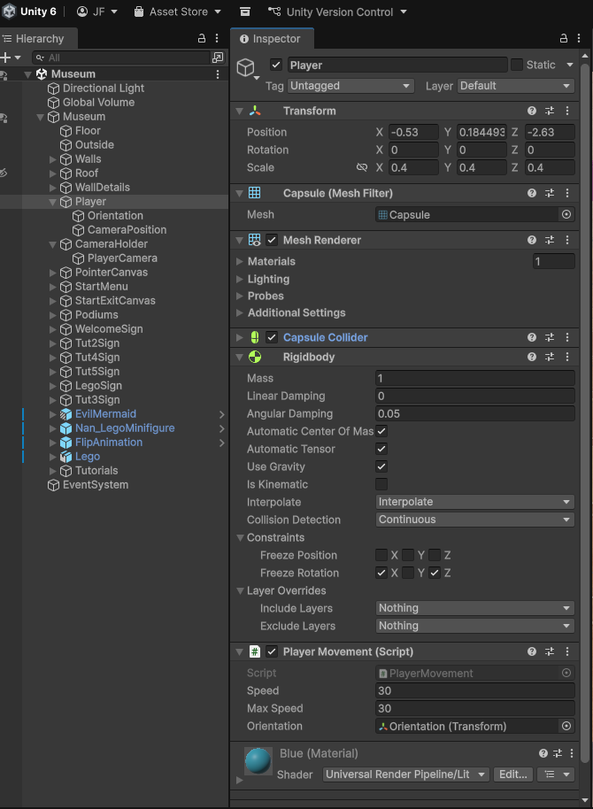
Player Game Object - Orientation Game Object
- Player Game Object
- Orientation Game Object
https://gyazo.com/11999acc16880e7cb1a5f0cd6a9d42c9
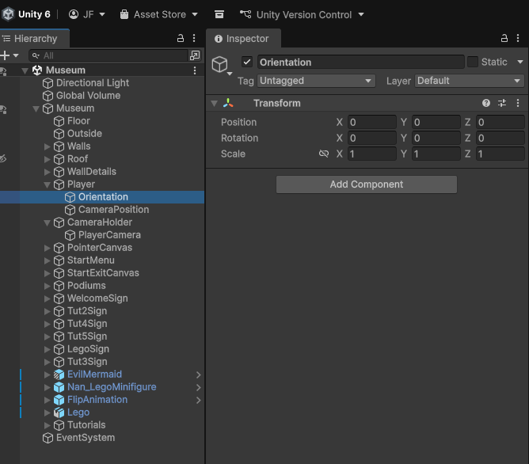
Player Game Object - Camera Position Game Object
- Player Game Object
- Camera Position Game Object
https://gyazo.com/ce67e7808baddeecad77d55ef3ea2ad2
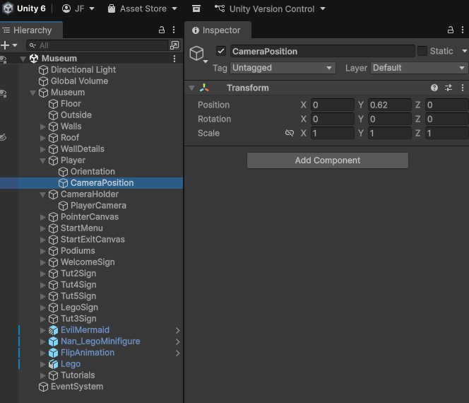
Camera Holder Game Object - CameraMove.cs
- Camera Holder Game Object
- CameraMove.cs
1.CameraPosition GameObject child of Player GameObject is followed for transform position
2. This handles the position via PlayerGO/PlayerMovement.cs RigidBody controller script
3. This allows the PlayerCam.cs on the PlayerCamera GO to handle the orientation
https://gyazo.com/e1810339c3985cc0e137597b4569f9b2
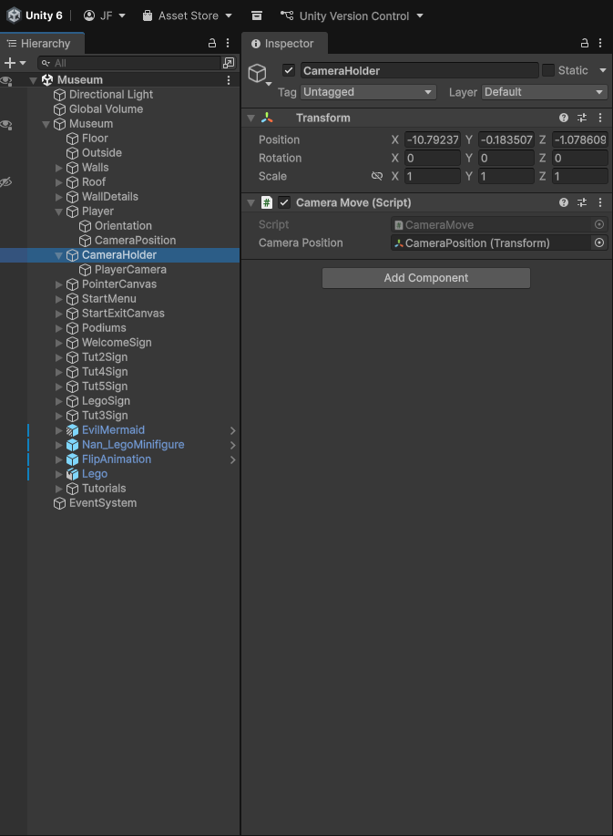
Camera Holder Game Object - PlayerCamera - PlayerCam.cs
- Camera Holder Game Object
- PlayerCamera Game Object
- PlayerCam.cs
- PlayerCamera Game Object
1.Mouse-look controller - Reads mouse X/Y, applies sensitivities and Time.deltaTime, clamps pitch, updates camera rotation.
2. Writes yaw to a public Transform variable called "orientation" which Updates the Orientation GO child of the Player GO (orientation.rotation = Quaternion.Euler(0, yrotation, 0)) so movement aligns with camera yaw.
Note: its cursor-locking startup code is commented out; cursor state is handled elsewhere.
https://gyazo.com/ce67e7808baddeecad77d55ef3ea2ad2
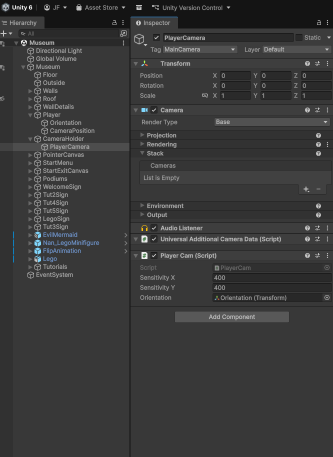
Unity 2.5D Camera - Position State Changes
Case 04 Unity 2.5D Camera – Position State Changes
(Tap to move camera – TGC, Krak, Sniper(FPS) )
New camera position by keypress
- Move Camera to new Vector3 Postion, Keep Orbit Options (Code to Come)
- Sniper (complex with FPS, at 12:00 on)
Video: Unity 3D Tutorial Third Person Shooter part 2 The Aiming [Outdated]
- New camera position by screen tap
- Raycast and Lerp (Complex with 3PC, TGC)
http://www.thegamecontriver.com/2014/10/move-to-mouse-click-touch-position-unity.html